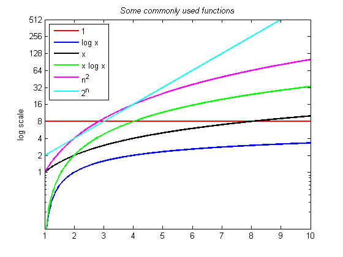
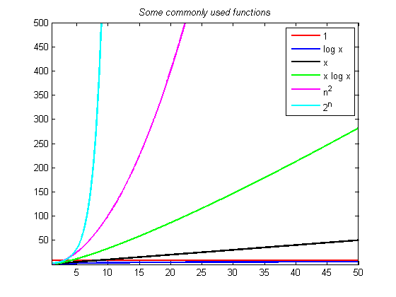

Growth of functions commonly used in Big-O Estimates
This shows how to reproduce the graph shown on Figure 3 of section 3.2 of Rosen's textbook.
% functions to plot x = linspace(1, 10, 500); y1 = 8 + zeros(size(x)); y2 = log2(x); y3 = x; y4 = x.*log2(x); y5 = x.^2; y6 = 2.^x; % plot the functions: figure() semilogy(x, y1, 'r', x, y2, 'b', x, y3, 'k', x, y4, 'g', x, y5, 'm', x, y6, 'c', 'linewidth', 2) axis([1, 10, 0.1, 513]) set(gca, 'ytick', [1, 2, 4, 8, 16, 32, 64, 128, 256, 512]) ylabel('log scale') title('\it{Some commonly used functions}') legend('1', 'log x', 'x', 'x log x', 'n^2', '2^n','Location','northwest')
Here are the same functions plotted on a linear scale. The limits on the x and y axes are smaller here so that the plots can be more esily seen.
x = linspace(1, 50, 2500); y1 = 8 + zeros(size(x)); y2 = log2(x); y3 = x; y4 = x.*log2(x); y5 = x.^2; y6 = 2.^x; % plot the functions: figure() plot(x, y1, 'r', x, y2, 'b', x, y3, 'k', x, y4, 'g', x, y5, 'm', x, y6, 'c', 'linewidth', 2) axis([1, 50, 0.1, 500]) %set(gca, 'ytick', [1, 2, 4, 8, 16, 32, 64, 128, 256, 512]) title('\it{Some commonly used functions}') legend('1', 'log x', 'x', 'x log x', 'n^2', '2^n','Location','northeast')